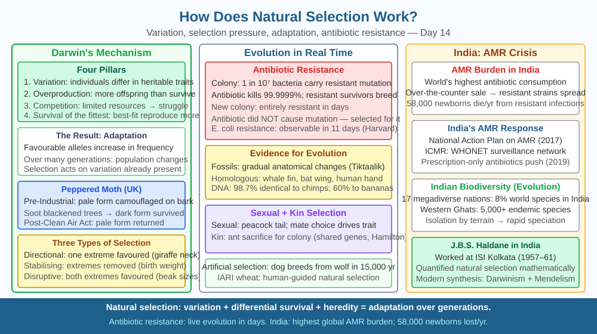

By the end of this lesson, you should be able to describe the four conditions required for natural selection to operate, explain the mechanism by which favourable traits increase in frequency across generations, and predict how a harmful trait changes in a population over time.
In the 1940s, before antibiotics were widely used, a simple bacterial infection could kill a healthy adult. Today, certain strains of Staphylococcus aureus — nicknamed MRSA — can resist multiple antibiotics simultaneously. No scientist designed these resistant bacteria. No bacteria decided to become resistant. Yet resistance spread through bacterial populations in hospitals across India and the world within decades. How can a population change so dramatically, so fast, with no plan or purpose directing it?
The answer is natural selection, the mechanism first described by Charles Darwin in 1859. Natural selection is not a force that pushes organisms toward any goal — it is a filter. It simply allows some individuals to survive and reproduce more than others, and because survival and reproduction pass traits to offspring, those traits become more common in subsequent generations.
For natural selection to operate, four conditions must all be present simultaneously:
Condition 1 — Variation. Individuals in a population must differ from each other in some heritable trait. In a population of bacteria, some cells may naturally carry a mutation in a gene encoding a cell-wall protein, making their wall slightly different from the majority. This variation arises from random mutation — errors in DNA replication that occur at a rate of roughly one per billion base pairs per replication cycle.
Condition 2 — Heritability. The variation must be genetic — it must be passed from parent to offspring. A bacterium with a resistance-conferring mutation will pass that mutation to its daughter cells when it divides by binary fission. Non-genetic variation (such as a scar on one individual) is not heritable and is invisible to natural selection.
Condition 3 — Differential survival and reproduction (Selection pressure). The environment must favour some variants over others. When a patient takes an antibiotic such as penicillin, the drug kills bacteria that are sensitive to it by blocking cell-wall synthesis. Bacteria with the resistance mutation survive; sensitive bacteria die. This difference in survival is the selection pressure. Without a selection pressure, all variants survive equally and the trait frequencies remain unchanged.
Condition 4 — Time and reproduction. The surviving variants must reproduce, passing their advantageous trait to offspring. E. coli can divide every 20 minutes under ideal conditions. Within hours, one resistant bacterium can become millions of resistant bacteria. Over many generations, the resistant trait increases in frequency from rare to dominant in the population.
The key insight is that the environment does not create the resistance mutation — the mutation already existed by chance in a few individuals before the antibiotic was introduced. The antibiotic merely changed which individuals survived to reproduce. Natural selection selects from existing variation; it does not produce the variation it selects.
At the molecular level, a resistance mutation might alter the shape of the enzyme that penicillin targets (transpeptidase), so the drug can no longer bind and inhibit it. Or the bacterium may gain a gene encoding beta-lactamase — an enzyme that breaks down penicillin itself. Either way, the mechanism producing resistance is a pre-existing DNA sequence difference, not a directed response.
In populations of sexually reproducing organisms (such as humans), the same four conditions apply, but the timescale is much longer because generation times are years rather than minutes. Charles Darwin's classic example was the diversity of beak shapes in Galápagos finches — different islands presented different food sources (hard seeds versus soft insects), and the beaks best suited to each food source were favoured by selection, producing distinct species over thousands of generations.
Think of a population as a bag of differently coloured marbles (individuals) being filtered through a screen (the environment):
The screen does not create any marble type — it just determines which types are retained. If the screen changes (a new antibiotic is used), a different marble type may now fit.
The included SVG shows three generations of a bacterial population:

Natural selection has immediate, practical relevance in India:
Q3 established that a trait reducing reproductive success becomes rarer over generations. Now extend the prediction: consider a recessive allele that is harmful only when two copies are present (homozygous), but completely neutral — neither harmful nor beneficial — when only one copy is present (heterozygous carriers).
Predict: Would natural selection eliminate this recessive harmful allele from the population completely over time? Consider how many copies of the allele are hidden in heterozygous carriers at any given generation, and whether natural selection can "see" an allele that has no effect on the carrier's survival. What does this tell us about why recessive genetic diseases can persist in human populations for thousands of generations?
What is the core mechanism of natural selection?
Correct answer: b
Why is understanding natural selection's mechanism more useful than just knowing evolution happens?
Correct answer: c
What would happen to a trait in a population if it reduced reproductive success?
Correct answer: b
Explain today's concept to a younger student in 60 seconds without technical jargon. Then explain it again using the correct scientific vocabulary.
If both explanations describe the same mechanism, you have understood the concept rather than memorised it.
Darwin did not know about DNA or genes when he proposed natural selection in 1859. He knew that traits were inherited and that variation existed, but the molecular mechanism — mutations in base sequences producing variant alleles, which are then passed to offspring during meiosis and fertilisation — was only understood in the 20th century. The fact that Darwin arrived at the correct mechanism purely from observing organisms in nature, without any knowledge of the molecular level, is one of the most impressive achievements in the history of science.
Natural selection works because random mutations produce heritable variation in a population, environmental pressure kills individuals with less-suited variants, and survivors reproduce — so favourable alleles increase in frequency across generations without any planning or direction.